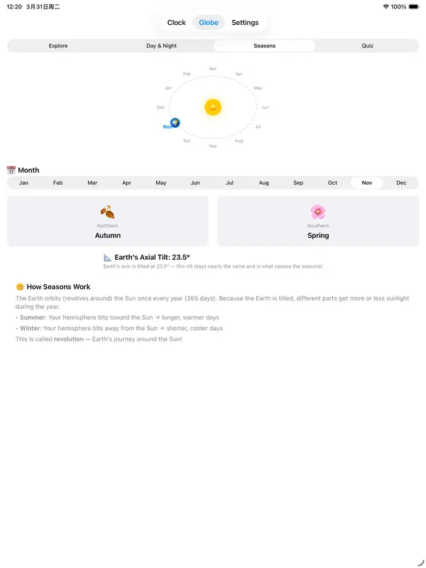

Aprende a dar la hora. Explora el mundo. Todo en una experiencia interactiva.
Tick Tock Earth reúne dos módulos de aprendizaje prácticos: un reloj analógico/digital totalmente interactivo y un espectacular globo 3D con imágenes de la NASA — con simulación día/noche, órbitas estacionales y cuestionarios.
Vista previa de la app
iPhone


iPad




Dos módulos, una app
Cada módulo es independiente e incluye herramientas interactivas, ayudas visuales y modos de cuestionario.
🕐 Reloj analógico interactivo
Arrastra las agujas de la hora y de los minutos para poner cualquier hora. La pantalla digital sincronizada se actualiza al instante. Comprende AM/PM y la relación entre las agujas y los números del reloj.
⏱ Calculadora de tiempo transcurrido
Fija una hora de inicio y una de fin y verás al instante la duración transcurrida. Una herramienta práctica para entender intervalos y diferencias de tiempo.
🌍 Globo 3D con texturas de la NASA
Gira una Tierra 3D vívida y de alta resolución. Toca cualquier continente u océano para volar hasta allí y leer datos rápidos. Activa la cuadrícula de latitud/longitud y las superposiciones con etiquetas.
🌗 Simulación de día y noche
Un globo estilo docente fijado en la inclinación axial de la Tierra (23,5°) con un polo del eje visible. Activa la luz del sol para ver cómo la rotación crea el día y la noche — como en una maqueta de clase.
🌞 Estaciones y diagrama orbital
Una vista orbital animada muestra la posición de la Tierra alrededor del Sol en cada mes. Las estaciones de los hemisferios norte y sur se muestran una junto a la otra.
📝 Cuestionarios integrados
Cuestionario del reloj: leer o poner la hora. Cuestionario de geografía: continentes, océanos, rotación, traslación, lugares emblemáticos y datos curiosos. Con registro de puntuaciones.
Cómo funciona
Dos módulos accesibles desde la pantalla de inicio — toca y explora.
Explorador del reloj
Pestaña Aprender: Arrastra las agujas de forma interactiva. Guías paso a paso explican las horas, los minutos y AM/PM.
Pestaña Tiempo transcurrido: Calcula el tiempo entre dos ajustes del reloj.
Pestaña Cuestionario: «Leer el reloj» o «Poner la hora» — elige tu respuesta y toca Comprobar respuesta.
Explorador del globo
Pestaña Explorar: Gira el globo 3D libremente. Toca las tarjetas de continentes/océanos para volar a cada lugar y leer datos.
Pestaña Día y noche: Ajusta la velocidad de rotación y activa la luz del sol. Pellizca para hacer zoom, toca dos veces para restablecer.
Pestaña Estaciones: Elige cualquier mes para ver la posición orbital de la Tierra y las estaciones de cada hemisferio.
Sin conexión y privado
Todo funciona en el dispositivo. Sin cuenta, sin anuncios, sin recopilación de datos. Funciona sin conexión a Internet — perfecto para clases, viajes o cualquier lugar.
Preguntas frecuentes
¿La app necesita conexión a Internet?
No. Todas las funciones — reloj, globo y cuestionarios — funcionan sin conexión.
¿La app recopila datos?
No. Cero recopilación de datos. Consulta nuestra Política de privacidad.
¿Funciona en iPad?
Sí. Tick Tock Earth es una app universal optimizada para iPhone y iPad.
¿Cómo restablezco la puntuación del cuestionario?
Toca el botón «Restablecer» junto a la puntuación, en la parte superior de cualquier pestaña de cuestionario.
¿Cómo contacto con soporte?
Escribe a wangning.engineer@outlook.com. El tiempo de respuesta habitual es de 24 a 48 horas.
Consigue la app
Tick Tock Earth está en el App Store para iPhone y iPad.